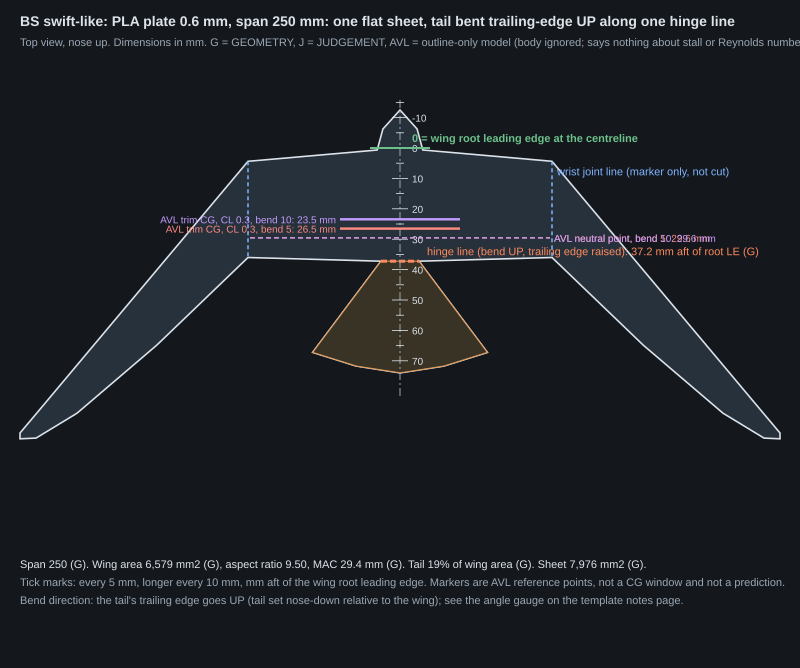
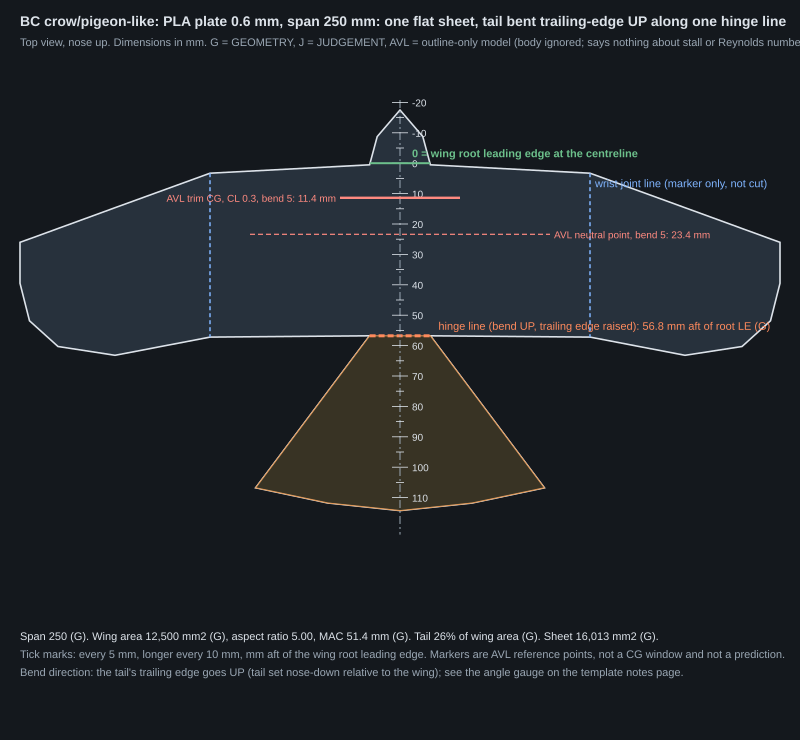

First bird-style flat glider outlines
Design numbers from an outline-only computer model (AVL) and from arithmetic. Nothing here is a flight result or a prediction that a glider glides or pulls out. Every number carries a tag: GEOMETRY (exact from the outline), AVL (outline-only vortex-lattice model), ARITHMETIC (simple sum, inputs stated), JUDGEMENT (our choice), ASSUMED (a stated guess), CITED (a number from the bird notes, with its source).
1. What this is
A one-piece flat sheet, seen from above like a gliding bird: a wing with an inner "arm" panel and an outer swept-back "hand" panel (the line between them, the wrist, is only marked on the sheet), a narrow body strip blended into the wing, and a short fan tail. There is no boom and no separate tailplane.
The requirement. The glider is released hanging nose-down from a quad and has to pull out of the dive by itself. A flat symmetric sheet has no nose-up pitching moment at zero lift, so it would not. Here the fan tail is bent trailing-edge up along one straight hinge line (the tail is set nose-down relative to the wing). One sheet, one bend.
What the model is. AVL (vortex-lattice) with the wing panels and the tail as a separate surface at incidence minus the bend angle. The body strip is ignored in the AVL model. AVL is inviscid and knows only the outline. It says nothing about flat-plate stall, the low Reynolds number, or whether a real build pulls out.
2. Two outline families, two sizes
BS is swift-like (slender, strongly swept hand, small tail). BC is crow/pigeon-like (broader wing, larger fan tail). Each at 250 mm span (3D printed, 0.6 mm PLA) and 400 mm span (foamboard, 5 mm and 300 g/m² both ASSUMED).






| BS printed | BS foam | BC printed | BC foam | |
|---|---|---|---|---|
| Span, mm [GEOMETRY] | 250 | 400 | 250 | 400 |
| Wing area, mm² [GEOMETRY] | 6,579 | 16,842 | 12,500 | 32,000 |
| Aspect ratio (b²/S) [GEOMETRY] | 9.50 | 9.50 | 5.00 | 5.00 |
| Mean aerodynamic chord, mm [GEOMETRY] | 29.4 | 47.1 | 51.4 | 82.2 |
| Root chord at the centreline, mm [GEOMETRY] | 37.2 | 59.6 | 56.8 | 90.8 |
| Wrist at fraction of semi-span [GEOMETRY] | 0.40 | 0.40 | 0.50 | 0.50 |
| Hand-panel leading-edge sweep, deg [JUDGEMENT] | 50 | 50 | 20 | 20 |
| Tail length behind the wing, mm [GEOMETRY] | 30.0 | 48.0 | 50.0 | 80.0 |
| Tail spread, mm [GEOMETRY] | 57.5 | 92.0 | 95.0 | 152.0 |
| Hinge line, mm aft of the root leading edge [GEOMETRY] | 37.2 | 59.6 | 56.8 | 90.8 |
| Tail area / wing area [GEOMETRY] | 0.19 | 0.19 | 0.26 | 0.26 |
| Thickness / MAC, % [GEOMETRY; foam thickness ASSUMED] | 2.04 | 10.63 | 1.17 | 6.08 |
3. What came from bird data and what is engineering judgement
From the bird notes (CITED)
- BS aspect ratio 9.5: common swift b²/S = 9.5 (paper value 9.8), from Henningsson & Hedenström 2011 [R2].
- BS tail spread 0.23 of the span: the swift's tail span was 0.09 m at 7 m/s against a 0.39 m wing span [R2] (ARITHMETIC 0.09/0.39); the bird furls it to 0.04 m at 11 m/s.
- BC aspect ratio 5.0: magpie 4.97 and jackdaw about 6, from the bird notes table [R9, R2].
Engineering judgement (JUDGEMENT)
- Everything else: arm and hand split, sweeps, chord distribution along the hand, tip shape, body width, nose length, tail length, tail root width, tail end rounding, the bend angles tried (0, 5, 10, 15 deg, set by the brief), the fin area, the tip-bend line and angles, the build-selection rule.
- The notes do not give arm/hand proportions, and say that sweep costs lift-to-drag ratio on simple plates (McArthur 2008, Re 15,000) and that outer-wing sweep is the part with a stated yaw-stability rationale (Sachs). They also say gliding birds with measured shape were not passively stable and that the bird tail is a lifting surface, not shown to be what stabilises the bird. This design does not rely on either claim: the bent tail is an engineering fix for the zero-lift moment.
Full list with tags: dimensions.csv.
4. AVL results by tail bend
Tail incidence = minus the bend angle (trailing edge up). Reference point for CM: the quarter chord of the wing's mean aerodynamic chord. CM0 is the pitching moment at zero lift, nose-up positive [AVL]. The model is linear, so numbers are the same at both sizes in % MAC; millimetres scale with the span. Static margin at trim = CM0 / CL (in MAC units); the trim CG is that far ahead of the neutral point [AVL].
BS swift-like (MAC 29.4 mm at 250 mm, 47.1 mm at 400 mm)
| tail bend, deg (trailing edge up) | neutral point, % MAC | neutral point, mm aft of root LE (250 / 400) | CM0 (zero lift) | trim CG at CL 0.2, mm (250 / 400) | static margin, % MAC | trim CG at CL 0.3, mm (250 / 400) | static margin, % MAC | trim CG at CL 0.4, mm (250 / 400) | static margin, % MAC | trim CG at CL 0.5, mm (250 / 400) | static margin, % MAC | Cn_beta /rad, no fin (CL 0.3) | Cl_beta /rad |
|---|---|---|---|---|---|---|---|---|---|---|---|---|---|
| 0 | 32.4 | 29.5 / 47.2 | -0.0000 | 29.5 / 47.3 | -0.0 | 29.5 / 47.3 | -0.0 | 29.5 / 47.2 | -0.0 | 29.5 / 47.2 | -0.0 | +0.0032 | -0.0494 |
| 5 | 32.5 | 29.6 / 47.3 | +0.0310 | 25.0 / 40.0 | 15.5 | 26.5 / 42.4 | 10.3 | 27.3 / 43.6 | 7.8 | 27.7 / 44.4 | 6.2 | +0.0044 | -0.0556 |
| 10 | 32.6 | 29.6 / 47.3 | +0.0624 | 20.4 / 32.7 | 31.2 | 23.5 / 37.5 | 20.8 | 25.0 / 40.0 | 15.6 | 25.9 / 41.5 | 12.5 | +0.0060 | -0.0618 |
| 15 | 32.7 | 29.6 / 47.4 | +0.0947 | 15.7 / 25.1 | 47.3 | 20.3 / 32.5 | 31.6 | 22.7 / 36.3 | 23.7 | 24.1 / 38.5 | 18.9 | +0.0079 | -0.0682 |
BC crow/pigeon-like (MAC 51.4 mm at 250 mm, 82.2 mm at 400 mm)
| tail bend, deg (trailing edge up) | neutral point, % MAC | neutral point, mm aft of root LE (250 / 400) | CM0 (zero lift) | trim CG at CL 0.2, mm (250 / 400) | static margin, % MAC | trim CG at CL 0.3, mm (250 / 400) | static margin, % MAC | trim CG at CL 0.4, mm (250 / 400) | static margin, % MAC | trim CG at CL 0.5, mm (250 / 400) | static margin, % MAC | Cn_beta /rad, no fin (CL 0.3) | Cl_beta /rad |
|---|---|---|---|---|---|---|---|---|---|---|---|---|---|
| 0 | 31.8 | 23.3 / 37.2 | -0.0000 | 23.3 / 37.2 | -0.0 | 23.3 / 37.2 | -0.0 | 23.3 / 37.2 | -0.0 | 23.3 / 37.2 | -0.0 | +0.0009 (near zero) | -0.0130 |
| 5 | 32.1 | 23.4 / 37.4 | +0.0702 | 5.4 / 8.6 | 35.1 | 11.4 / 18.2 | 23.4 | 14.4 / 23.0 | 17.5 | 16.2 / 25.9 | 14.0 | +0.0012 (near zero) | -0.0109 |
| 10 | 32.3 | 23.5 / 37.6 | +0.1410 | -12.7 / -20.3 | 70.5 | -0.6 / -1.0 | 47.0 | 5.4 / 8.7 | 35.3 | 9.0 / 14.5 | 28.2 | +0.0019 (near zero) | -0.0088 |
| 15 | 32.7 | 23.7 / 37.9 | +0.2137 | -31.2 / -49.9 | 106.9 | -12.9 / -20.6 | 71.2 | -3.8 / -6.0 | 53.4 | 1.7 / 2.8 | 42.7 | +0.0031 | -0.0064 |
Reading it: with no bend there is no nose-up moment at zero lift (CM0 is zero), so the sheet would not pull out of a vertical dive. Each degree of bend adds nose-up moment, and the trim CG moves ahead of the neutral point. A negative trim-CG number means that trim lies ahead of the wing root leading edge; the existing rails cannot carry ballast there.
5. Which outline choices buy the most nose-up moment and margin per tail area
A small scan at a 10 deg bend: tail length x 0.8, 1, 1.25, tail spread x 0.8, 1, 1.25, hand sweep -10, +0, +10 deg (27 outlines per family) [AVL]. Each row averages the scan over one level of one factor. Per tail area = divided by tail area / wing area. Full scan in scan.csv.
BS
| factor | level | mean CM0 | mean static margin at CL 0.3, % | mean tail area / wing area | CM0 per tail area | SM per tail area, % | mean neutral point, % MAC | mean Cn_beta /rad |
|---|---|---|---|---|---|---|---|---|
| tail length x | 0.8 | 0.0478 | 15.9 | 0.157 | 0.298 | 99.3 | 29.8 | +0.0062 |
| tail length x | 1 | 0.0627 | 20.9 | 0.197 | 0.312 | 104.1 | 31.1 | +0.0064 |
| tail length x | 1.25 | 0.0817 | 27.2 | 0.246 | 0.325 | 108.4 | 32.8 | +0.0066 |
| tail spread x | 0.8 | 0.0426 | 14.2 | 0.164 | 0.259 | 86.3 | 29.7 | +0.0058 |
| tail spread x | 1 | 0.0625 | 20.8 | 0.197 | 0.315 | 105.0 | 31.1 | +0.0064 |
| tail spread x | 1.25 | 0.0872 | 29.1 | 0.239 | 0.362 | 120.6 | 32.9 | +0.0071 |
| hand sweep deg | 40 | 0.0819 | 27.3 | 0.200 | 0.402 | 134.0 | 33.8 | +0.0041 |
| hand sweep deg | 50 | 0.0653 | 21.8 | 0.200 | 0.318 | 106.0 | 32.8 | +0.0061 |
| hand sweep deg | 60 | 0.0450 | 15.0 | 0.200 | 0.215 | 71.8 | 27.0 | +0.0091 |
BC
| factor | level | mean CM0 | mean static margin at CL 0.3, % | mean tail area / wing area | CM0 per tail area | SM per tail area, % | mean neutral point, % MAC | mean Cn_beta /rad |
|---|---|---|---|---|---|---|---|---|
| tail length x | 0.8 | 0.1208 | 40.3 | 0.214 | 0.558 | 186.0 | 30.8 | +0.0017 |
| tail length x | 1 | 0.1434 | 47.8 | 0.267 | 0.529 | 176.4 | 32.9 | +0.0019 |
| tail length x | 1.25 | 0.1707 | 56.9 | 0.334 | 0.503 | 167.7 | 35.5 | +0.0024 |
| tail spread x | 0.8 | 0.1019 | 34.0 | 0.222 | 0.463 | 154.3 | 30.5 | +0.0020 |
| tail spread x | 1 | 0.1422 | 47.4 | 0.268 | 0.536 | 178.5 | 32.5 | +0.0021 |
| tail spread x | 1.25 | 0.1908 | 63.6 | 0.324 | 0.592 | 197.2 | 36.2 | +0.0020 |
| hand sweep deg | 10 | 0.1506 | 50.2 | 0.271 | 0.551 | 183.7 | 33.8 | +0.0008 |
| hand sweep deg | 20 | 0.1453 | 48.4 | 0.271 | 0.531 | 177.1 | 33.0 | +0.0020 |
| hand sweep deg | 30 | 0.1390 | 46.3 | 0.271 | 0.508 | 169.3 | 32.4 | +0.0033 |
6. Yaw stability without a fin, and two possible fixes
Cn_beta is how strongly the sheet turns back into the wind when it yaws; Cl_beta is the roll tendency in sideslip (negative is the stable sign for a wing). Without a fin both are small [AVL]. Each fix below is evaluated separately at a 10 deg tail bend. No recommendation is made here; these are the numbers.
BS
| case | detail | Cn_beta /rad | Cl_beta /rad | neutral point, % MAC | CM0 |
|---|---|---|---|---|---|
| none (baseline) | no fin, flat wing | +0.0060 | -0.0618 | 32.6 | +0.0624 |
| ventral fin | 3% of wing area, chord 18.0 mm, height 11.0 mm below the sheet, under the tail | +0.0079 | -0.0625 | 32.6 | +0.0624 |
| tip bent down | outer 30% of the hand panel bent 60 deg about a chordwise line | +0.0517 | -0.0007 | 21.6 | +0.0743 |
| tip bent down | outer 30% of the hand panel bent 30 deg about a chordwise line | +0.0247 | -0.0126 | 29.0 | +0.0662 |
| tip bent up | outer 30% of the hand panel bent 30 deg about a chordwise line | +0.0091 | -0.1092 | 30.5 | +0.0652 |
| tip bent up | outer 30% of the hand panel bent 60 deg about a chordwise line | +0.0265 | -0.1173 | 24.0 | +0.0727 |
BC
| case | detail | Cn_beta /rad | Cl_beta /rad | neutral point, % MAC | CM0 |
|---|---|---|---|---|---|
| none (baseline) | no fin, flat wing | +0.0019 | -0.0088 | 32.3 | +0.1410 |
| ventral fin | 3% of wing area, chord 30.0 mm, height 12.5 mm below the sheet, under the tail | +0.0059 | -0.0097 | 32.3 | +0.1410 |
| tip bent down | outer 30% of the hand panel bent 60 deg about a chordwise line | +0.0097 | +0.0548 | 31.8 | +0.1419 |
| tip bent down | outer 30% of the hand panel bent 30 deg about a chordwise line | +0.0057 | +0.0367 | 32.2 | +0.1413 |
| tip bent up | outer 30% of the hand panel bent 30 deg about a chordwise line | +0.0005 | -0.0567 | 32.2 | +0.1412 |
| tip bent up | outer 30% of the hand panel bent 60 deg about a chordwise line | +0.0014 | -0.0798 | 31.9 | +0.1418 |
7. Proposed builds, masses and pull-out arithmetic
A proposal for Kai, not a decision. Rule (JUDGEMENT): tail bends above 0 whose CL 0.3 trim CG lies at or behind the wing root leading edge (reachable with the existing rails' nose ballast), ranked by how close the CL 0.3 static margin is to the middle of 5 to 15%; up to two. The same flat sheet serves any bend: the tail is bent by hand to the angle gauge.
BS: proposed tail bends 5, 10 deg. The static margin at CL 0.3 for the bends tried: 5 deg: 10% MAC, trim CG 27 mm at 250; 10 deg: 21% MAC, trim CG 23 mm at 250; 15 deg: 32% MAC, trim CG 20 mm at 250.
BC: proposed tail bends 5 deg. The static margin at CL 0.3 for the bends tried: 5 deg: 23% MAC, trim CG 11 mm at 250; 10 deg: 47% MAC, trim CG -1 mm at 250; 15 deg: 71% MAC, trim CG -13 mm at 250.
| build | bend | sheet mass, g | existing rail | rail, g | bare CG, mm | trim CG (CL 0.3), mm | ballast needed, g | all-up, g | wing loading, N/m² | pull-out radius CL 0.3 / 0.5, m | rail saddle fits ahead of the hinge? | rail ticks cover the trim CGs? |
|---|---|---|---|---|---|---|---|---|---|---|---|---|
| BS printed 250 mm | 5 | 5.9 [ARITHMETIC] | F45_span250 (104 mm) | 2.5 | 33.1 | 26.5 [AVL] | 1.1 | 9.6 | 14.3 | 7.9 / 4.8 [ARITHMETIC] | no: saddle ends at 74 mm, hinge at 37 mm | no |
| BS printed 250 mm | 10 | 5.9 [ARITHMETIC] | F45_span250 (104 mm) | 2.5 | 33.1 | 23.5 [AVL] | 1.8 | 10.2 | 15.3 | 8.5 / 5.1 [ARITHMETIC] | no: saddle ends at 74 mm, hinge at 37 mm | no |
| BS foam 400 mm | 5 | 6.1 [ARITHMETIC] | B45_span400 (166 mm) | 4.1 | 50.2 | 42.4 [AVL] | 1.0 | 11.2 | 6.5 | 3.6 / 2.2 [ARITHMETIC] | no: saddle ends at 119 mm, hinge at 60 mm | no |
| BS foam 400 mm | 10 | 6.1 [ARITHMETIC] | B45_span400 (166 mm) | 4.1 | 50.2 | 37.5 [AVL] | 1.7 | 11.9 | 6.9 | 3.8 / 2.3 [ARITHMETIC] | no: saddle ends at 119 mm, hinge at 60 mm | no |
| BC printed 250 mm | 5 | 11.9 [ARITHMETIC] | F45_span250 (104 mm) | 2.5 | 40.1 | 11.4 [AVL] | 12.2 | 26.7 | 20.9 | 11.6 / 7.0 [ARITHMETIC] | no: saddle ends at 74 mm, hinge at 57 mm | no |
| BC foam 400 mm | 5 | 12.3 [ARITHMETIC] | B45_span400 (166 mm) | 4.1 | 61.4 | 18.2 [AVL] | 12.7 | 29.0 | 8.9 | 4.9 / 3.0 [ARITHMETIC] | no: saddle ends at 119 mm, hinge at 91 mm | no |
Sheet mass: printed = mesh volume x PLA density, foamboard = area x areal mass (both densities ASSUMED, read from flat_test.py). Rail mass from the existing rail mesh. Ballast is added at the rail's default nose hole to bring the CG to the CL 0.3 trim point. Pull-out radius: R = 2 (W/S) / (rho g CL), the minimum radius of a steady circular pull-up at constant CL with load factor much greater than 1, air density 1.225 (ASSUMED), S the wing outline area; it ignores speed build-up in the dive, stall and trim, and says nothing about whether the glider pulls out [ARITHMETIC].
Printed CG rails
The existing rails are 104 mm (250 mm span), 78 mm and 166 mm (400 mm span). Their 0 mark sits at the wing root leading edge at the centreline, and so does the 0 mark here. The rail saddle runs aft from 0 under the body strip for one root chord of the rail's own wing (74 mm, 56 mm, 119 mm); it must stop ahead of the tail hinge or it will stiffen the bend. Where the table says no, cut the rail's rear end back at the hinge, or print a shorter rail; the tick range of the existing rails also may not cover the new trim CGs.
8. Files
- BS PLA plate 250 mm: drawing.svg, parts.dxf, sheet.stl (flat, scored hinge: one 0.2 mm strip, 1 mm wide; three overlapping closed shells)
- BS foamboard 400 mm: drawing.svg, parts.dxf, templates: template_page1.svg, template_page2.svg
- BC PLA plate 250 mm: drawing.svg, parts.dxf, sheet.stl (flat, scored hinge: one 0.2 mm strip, 1 mm wide; three overlapping closed shells)
- BC foamboard 400 mm: drawing.svg, parts.dxf, templates: template_page1.svg, template_page2.svg, template_page3.svg


Print templates for the foamboard size (1:1, US Letter, white): bird_foam_templates.pdf (made with flat_templates_pdf.py). Each page has a 100 mm scale bar; check it with a ruler before cutting.
9. What to try at the field
- Weigh the finished glider and measure the CG on a knife edge. Put the CG at one of the AVL trim points (the green ticks) with the rail ballast. These are reference points, not a window.
- Make the tail bend with the angle gauge. Check both halves of the sheet are flat and the tail is not twisted.
- Hand-glide first, level, at a gentle speed. Note whether the nose rises or falls.
- Drone drop from 10 m, released hanging nose-down, with the same method each time. Record the pull-out height lost if you can see it on video.
- Try the other proposed bend, then the other outline, changing one thing at a time. Note roll-offs and yaw wander separately: Cn_beta and Cl_beta here are small without a fin.
- If it yaws or rolls, the two fixes in section 6 (a small ventral fin under the tail, or bent wing tips) are the first things to try, one at a time.
What is not known
- Whether a flat plate sheet at these Reynolds numbers (about 12,000 to 31,000) pulls out of a dive or glides. The published plate data stop at Reynolds number 60,000 and were for unswept rectangles.
- Whether the bent tail still works after the dive speed builds up, or stalls.
- Whether a printed hinge strip holds the bend; foam creases are easier.
- Static pitch stability is not the same as a steady glide.